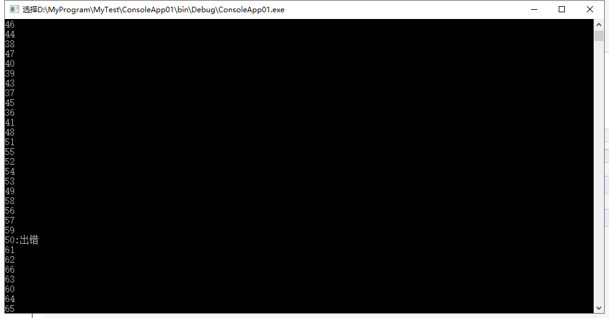

static void Main(string[] args)
{
//写日志
//使用线程池
for (int i = 0; i < 1000; i++)
{
ThreadPool.QueueUserWorkItem(new WaitCallback(ReceiveMessage), i);
}
Console.ReadKey();
}
private static void ReceiveMessage(object index)
{
Thread.Sleep(100);
int b = 0;
try
{
if (index.ToString() == "50")
{
Console.WriteLine(100 / b);
}
else
{
Console.WriteLine(index.ToString());
}
}
catch (Exception)
{
Console.WriteLine(index+":出错");
}
}以上是测试代码，结论如下：
1.线程池中的异常不做处理：会导致整个程序的闪退
2.针对异常代码添加异常处理机制：不影响其他线程的执行
